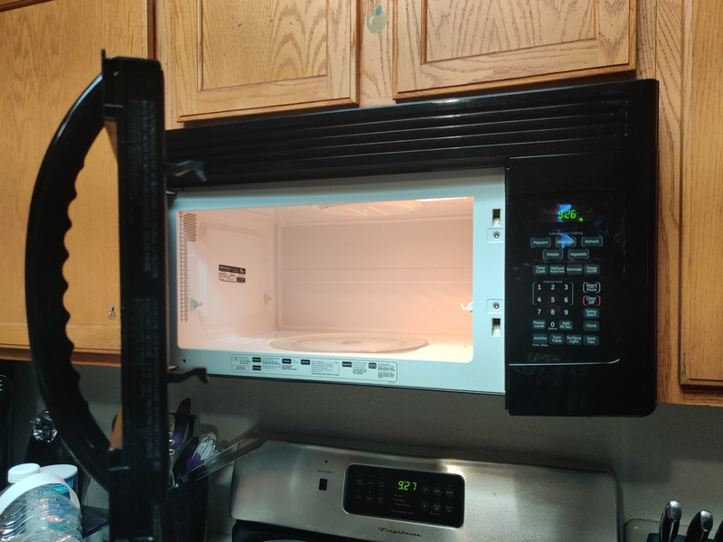
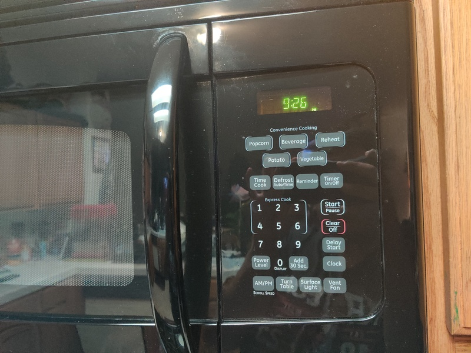
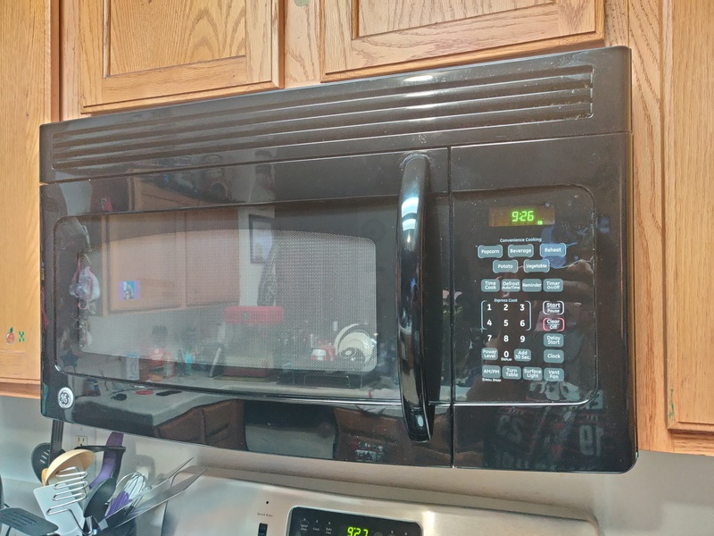
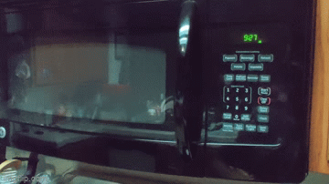

This is my report and presentation page for HCI class
Images of control interface of microwave in my house:



2 examples of how the interface operates:

Issues with current design:
1. Most of the Microwave buttons are not used. - There is very limited space on the microwave
control panel and when much of it is taken up by buttons that don't serve much use, it becomes
a waste of space.
2. There are no accommodations on the microwave for people with disabilities. - There is no
auditory guidance for the blind community. The way you open the microwave is also not friendly
to those with physical disabilities who may have trouble opening and closing the door.
3. Some buttons are not grouped around buttons of similar function. - Some of the buttons
could be grouped to be near buttons that perform similar or related actions. For example the
clock set, AM/PM, and Timer button should be near each other, as they deal with time
unrelated to the function of the microwave.
4. Some of the labels are not fully clear on what they do. - The buttons that set the clock
of the microwave and the button to set a custom cook time could possible be confused with
each other.
Common Uses:
1. Reheating Leftovers - The microwave does a very good job at making this common task very
easy. Many of its numerical buttons also serve as a quick start for as many minutes as the
button shows. It also has a button to add 30 seconds to the remaining time, which also
serves as a way to start the microwave with 30 seconds on the timer.
2. Setting Timers - The microwave does a moderately good job setting timers, since you have
to fill all the spaces in seconds and minutes from left to right. For example, if you want
to set a 15 minute timer, you have to hit 1,5,0, and 0. This isn't obvious at first.
3. Clock - Once you set the time on the microwave, the microwave will keep track of the time
until the microwave loses power.
Rare Uses:
1. Vent Fan - While we don't often use this function, a simple press will turn on the fan
and if it is pressed again it turns it on low. One more press turns the fan off.
2. Convenience Cooking Options - Many of the specific food options are not often used
due to them typically not being the best options. They are simple to use, but do not
give good user feedback for how long it will take
The most common sequence of actions done on this microwave is microwaving for 30 seconds
at a time. After that, the next most common sequence is setting a timer, so pressing timer
then inputing the time.
The microwave helps the user figure out how to make it work for certain functions well.
When you press the timer button, a message scrolls on the screen telling you to input a
time and then press timer again. Also, there is plenty of labeling to help the user
understand how to quickly start the microwave with both a 30 second timer and using the
express times.
The only way that the microwave provides feedback to the user is through audio cues.
Whenever a button is pressed, you hear a beep. Whenever the microwave runs, you can
hear the hum of the microwave running. When the microwave both finishes microwaving
as well as finishes a timer, it will go through a sequence of beeps. Other than that
there is very little feedback to the user.
One of the common mistakes I tend to make on this microwave is I start the timer
when I have only inputted the seconds on the timer. I then have to restart the
timer and correctly set up the timer. I will also sometimes accidentally hit the
time cook button instead of the timer and vise versa.
Suggested Improvements:
1. Add an additional button on the interface to open the door to the microwave - This option
would allow more accessibility for those with physical disabilities.
2. Separating all not cooking-related time options into one area - Meant to decrease confusion
between using the microwave as a microwave versus using it as a timer or a clock.
3. Adding an option to cycle through end of time options (Mute, Low, High) - Useful for those
who want to stay quiet while using the microwave as well as people who are overwhelmed by the
repetitive beeping noise. Also allows more versatility by allowing a decrease in volume of the
beeping noise.
4. Adding an option for a visual notification that the time has finished - Increases usability
for people who are hard of hearing or those who prefer a visual notification rather than audible.
5. Allowing for different font size options for the display - Makes seeing the information on
the display easier for the visually impaired.
6. Removing some of the "convenience cooking" options - Many of the specific options for the
heating times are almost never used, and have no real reason to be on the microwave. However,
I will keep some of the more commonly used ones, such as popcorn.
Interface Sketch:
My Implementation:
The touch screen on my design would have the dimensions of 13 inches x 6.5 inches. It would
also be directly to the right of the microwave door.